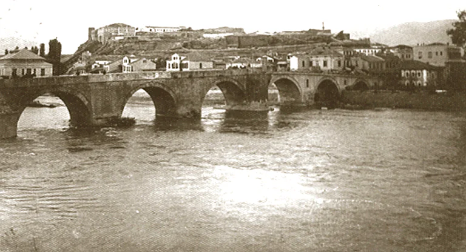
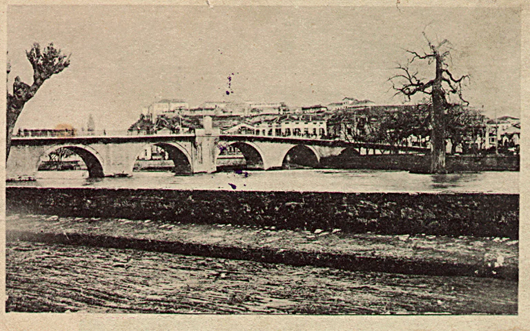
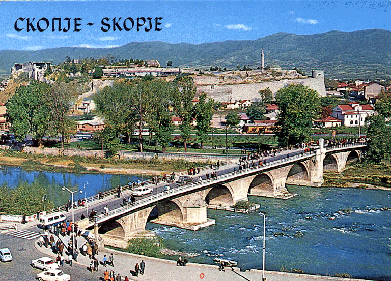
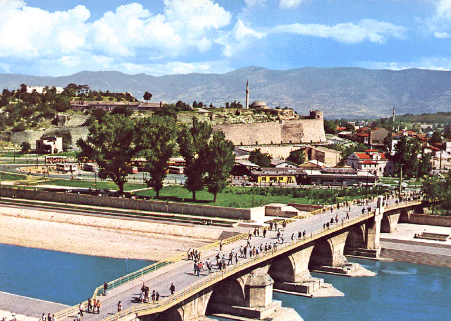

Skopje 1916 - 1917 most
Dokumenti iz balkanskih vojn
- Leto
- 1916-1917
- Trajanje
- 00:13

V središču mesta je čez Vardar zgrajen monumentalni kamniti most (ljudsko imenovan Kamniti most). Po nekaterih turških virih je bil zgrajen v drugi polovici 15. stoletja, v času sultana Mehmeda II. Po najnovejših raziskavah iz leta 1990 ob obnovi mostu domnevajo, da je bil zgrajen v času Justinijana I. v 6. stoletju. Zgrajen je iz dobro obdelanih kamnitih blokov, konstrukcija pa sloni na mogočnih stebrih, povezanih s polkrožnimi loki - 13 po številu. Leta 1905 so zgradili betonske pešpoti, ki so bile prej pokrite z deskami. Leta 1937 je bil razširjen s konzolami, na katere so prestavili pešpoti. Na fotografiji je Skopje konec 19. stoletja. Pogled na Kamniti most in staro platano. Desno zgoraj je skopska trdnjava - Kale z vojašnico.

Kamniti most - konec 19. stoletja. V ozadju levo se vidi Burmali mošeja.

Kamniti most - konec 19. stoletja. V ozadju levo se vidi Burmali mošeja.

Skopje konec 19. in na začetku 20. stoletja (poleti) - pogled na Kamniti most. V ospredju je telefonski drog s poštnim nabiralnikom. Tik ob njem je svetilka, prva oblika mestne komunalne opreme. Ker je poletje, se pešci pred soncem varujejo z dežniki. Za prevoz tovora so uporabljali volovske vozove, kočije pa so bile javno prevozno sredstvo. Tik ob mostu desno se vidi veliko mlinsko kolo.

Skopje konec 19. in na začetku 20. stoletja (pozimi) - pogled na Kamniti most. V ospredju je telefonski drog s poštnim nabiralnikom. Tik ob njiju je svetilka, prva oblika mestne komunalne opreme. Vidne so netlakovane blatne ulice. V ozadju sta judovska četrt in skopska trdnjava - Kale.

Panorama Kamnitega mostu na začetku 20. stoletja.

Kamniti most - okoli 1905. V ozadju levo zgoraj se vidi skopska trdnjava - Kale z vojašnicami. Desno je stara platana.

Kamniti most konec 19. in na začetku 20. stoletja. Desno zgoraj se vidi skopska trdnjava - Kale.

Skopje v turškem obdobju - začetek 20. stoletja. Na fotografiji se vidi, da ima ena polovica Kamnitega mostu kamnito ograjo, druga pa začasno ograjo iz železa in lesa. Leta 1905 so začeli kamnito ograjo nadomeščati z železno. V Skopju v turškem obdobju - začetek 20. stoletja. Na fotografiji se vidi, da ima ena polovica Kamnitega mostu kamnito ograjo, druga pa začasno ograjo iz železa in lesa. Leta 1905 so začeli kamnito ograjo nadomeščati z železno. V levem kotu, za Kamnitim mostom, se vidi turško gledališče. Tik ob mostu desno se vidi veliko mlinsko kolo. Desno je stara platana, na kateri je bilo obešeno Karpoševo truplo takoj po zadušitvi Karpoševega upora - 1689. V ozadju se v celoti vidita skopska trdnjava - Kale in stanovanjske stavbe judovske četrti. Zanimivo je beljenje platna, ki so ga opravljale ženske v čisti vodi Vardarja - v ospredju fotografije.

Skupina Turkov na Kamnitem mostu - začetek 20. stoletja. Zanimivo je, da so pločniki mostu pokriti z deskami.

Železniški most na Vardarju v Skopju - konec 19. stoletja.

Kamniti most na reki Pčinji - okolica Skopja (danes ne obstaja). Sodeč po človeku na vrhu mostu je most visok okoli 15 metrov nad vodo. (1910-a leta)

Skopje leta 1902. Na fotografiji se vidi leseni most, za njim pa stara kavarna „Boges“, v kateri so potekale prve gledališke predstave. Nad njo je skopska trdnjava - Kale z vojašnico.

Kamniti most - 1905. Levo za njim se vidi Turško gledališče, zgoraj pa skopska trdnjava - Kale.

Pogled proti desnemu bregu Vardarja skozi krošnjo stare platane - okoli 1910. Vidijo se: del Kamnitega mostu, Burmali mošeja in trgovine pred njo.

Skopje pred letom 1912. Kamniti most s konzolami in železno ograjo. Desno je stara platana, zgoraj pa se vidi skopska trdnjava - Kale.

Skopje med balkansko vojno. V ozadju Burmali mošeja.

Pogled z dela Kamnitega mostu proti skopski trdnjavi - Kale (okoli 1910)

Pogled na del Kamnitega mostu, v ozadju levo se vidi turško gledališče. Nad njim se dviga skopska trdnjava - Kale. (okoli 1910)

Kamniti most s skupino ljudi na njem - okoli 1913

Kamniti most na Vardarju v Skopju - okoli 1913

Kamniti most na Vardarju v Skopju - okoli 1913. V ozadju desno zgoraj se vidi skopska trdnjava - Kale.

Skopje leta 1912 - umetniška slika. Kamniti most in Burmali mošeja. V ozadju čudovit zeleni pas topolov. Opazna je vstavitev klasične arhitekture. Novi prostori nabrežja so nov mestni element. Skupine stanovanjskih, trgovskih in obrtnih stavb pred mostom delujejo in so sestavni del kompozicije, s tradicionalnimi potezami in elementi evropskih vplivov.

Železni most na Vardarju v Skopju s pogledom proti stari šoli, Sv. Mini in Sv. Bogorodici - okoli 1920.

Železni most, zgrajen leta 1905. V ozadju je stavba prve Skopske univerze. (1915)

Železni most, zgrajen leta 1905. V ozadju je stavba prve Skopske univerze. (1920-a leta.)

Železni most na Vardarju v Skopju, zgrajen leta 1905. V ozadju je stavba prve skopske univerze. (1920-a leta)

Železni most, zgrajen leta 1905. (1920-a leta)

Železni most na Vardarju v Skopju s pogledom na stavbe na nabrežju „Dimitar Vlahov“. (1920-a leta)

Skopje, okoli 1920. Del mestnega trga pred Kamnitim mostom. Prvi kioski za storitve in prodajo. Kioski imajo poudarjeno arhitekturo v podrobnostih, tj. v oblikovanju streh. Most je razširjen s pešpotnimi konzolami. V ozadju zgoraj se vidi skopska trdnjava - Kale.

Skopje, okoli 1920. Del mestnega trga pred Kamnitim mostom. Pred in na Kamnitem mostu so vidne majhne zgradbe za obveščanje meščanov s plakati. Most je razširjen s pešpotnimi konzolami. V ozadju levo zgoraj se vidi skopska trdnjava - Kale.

Kamniti most s skupino ljudi, ki opazujejo narasli Vardar. (1920-a leta)

Kamniti most - 1920. V ozadju se vidi Otomanska banka.

Pogled na Kamniti most proti Staremu mestu in četrti Pajko z ordinacijo zobozdravnika dr. Rubensa in Otomansko banko - okoli 1927.

Pogled na Kamniti most proti Staremu mestu, čaršiji in pobočju Gazi Babe. Tik ob mostu desno je bila ordinacija zobozdravnika dr. Rubensa. Malo bolj desno je stavba Otomanske banke. Med njima je bil majhen trg s postajališčem kočij. Sredi trga je stal spomenik padlim v balkanski vojni - okoli 1927.

Pogled na Kamniti most proti Staremu mestu, čaršiji in pobočju Gazi Babe. Tik ob mostu desno je bila ordinacija zobozdravnika dr. Rubensa. Malo bolj desno je stavba Otomanske banke. Med njima je bil majhen trg s postajališčem kočij. Sredi trga je stal spomenik padlim borcem - okoli 1927.

Pogled na Kamniti most proti Staremu mestu in četrti Pajko z ordinacijo zobozdravnika dr. Rubena in Otomansko banko - okoli 1927.

Pogled proti desnemu bregu Vardarja z delom mostu in Oficirskim domom - 1930-a leta. Levo se vidi ostanek posekane stare platane, na kateri je bilo leta 1689 po zadušitvi upora obešeno Karpoševo truplo.

Pogled na del Kamnitega mostu, stari platano in skopsko trdnjavo - Kale - okoli 1920.

Skopje, okoli 1920. Kamniti most s skopsko trdnjavo - Kale v ozadju. V ospredju beljenje platna v čisti vodi Vardarja.

Pogled na leseni mostiček in nabrežje na desnem bregu Vardarja. Stavbe imajo neoklasicistične in baročne podrobnosti. Ulica je današnja „Ilindenska“. V vrsti stavb je tudi Srednja glasbena šola. V ospredju je leseni mostiček, po katerem se je prišlo do Narodnega gledališča.

Leseni mostiček na Vardarju z Oficirskim domom v ozadju. Ob njem sta stavbi banke in stare pošte - konec 1920-ih let.

Pogled na leseni mostiček na Vardarju, v ozadju se vidijo Oficirski dom, stara pošta in banka - okoli 1930.

Pogled proti skopski trdnjavi - Kale z vojašnico. Pod njo je judovska četrt. V ospredju je leseni mostiček - 1950-a leta.

Pogled proti Narodnemu gledališču in lesenemu mostičku - 1930-a leta.

Kamniti most - 1930-a leta. V ozadju Narodno gledališče, nad njim skopska trdnjava - Kale.

Pogled na del trga in Kamniti most. V ozadju levo se vidita Narodno gledališče in skopska trdnjava - Kale. Opazna je kočija kot glavno prevozno sredstvo meščanov. V ospredju porušene stavbe za gradnjo Narodne banke - okoli 1930.

Narasli Vardar. Most je do polovice pod vodo. Fotografija je posneta z desnega proti levemu bregu - 1930-a leta.

Obnova in zamenjava tlakovca na Kamnitem mostu. Pogled na Ristićevo palačo in prve kioske - okoli 1930-ih let.

Pogled s Kamnitega mostu proti trgu. Levo čiščenje prostora za gradnjo Narodne banke - 1930-a leta.

Pogled z levega brega Vardarja proti Kamnitemu mostu in Oficirskemu domu - 1930-a leta.

Kamniti most na Vardarju - okoli 1930. V ozadju se vidi Narodno gledališče, desno zgoraj pa skopska trdnjava - Kale.

Kamniti most - 1950-a leta.

Del kamnitega mostu. V ozadju se vidi hotel „Grand“. - 1960-a leta

Kamniti most s skopsko trdnjavo - Kale v 1960-ih letih, pred ureditvijo nabrežja.

Pogled na kamniti most in skopsko trdnjavo - Kale. (1970-a leta)

Kamniti most v 1970-ih letih s srednjim delom nabrežja.

Kamniti most in trg v 1970-ih letih.

Pogled z desnega proti levemu bregu Vardarja, proti kamnitemu mostu, delu trga in novi pošti v ozadju. (1970-a leta)

Današnji most „Goce Delčev“, posnet s skopske trdnjave - Kale. (1990-a leta)

Dokumenti iz balkanskih vojn
 Akvadukt4 razglednice
Akvadukt4 razglednice Kale30 razglednic
Kale30 razglednic Mostovi60 razglednic
Mostovi60 razglednic Nabrežje58 razglednic
Nabrežje58 razglednic Trg46 razglednic
Trg46 razglednic Stavbe66 razglednic
Stavbe66 razglednic Krščanski templji19 razglednic
Krščanski templji19 razglednic Muslimanske stavbe33 razglednic
Muslimanske stavbe33 razglednic Oficirski dom29 razglednic
Oficirski dom29 razglednic Gledališče28 razglednic
Gledališče28 razglednic Železniška postaja13 razglednic
Železniška postaja13 razglednic Šole36 razglednic
Šole36 razglednic Parki12 razglednic
Parki12 razglednic Tržnice18 razglednic
Tržnice18 razglednic Ulice38 razglednic
Ulice38 razglednic Panorama I60 razglednic
Panorama I60 razglednic Panorama II30 razglednic
Panorama II30 razglednic Kolaži55 razglednic
Kolaži55 razglednic Poplave9 razglednic
Poplave9 razglednic Potres27 razglednic
Potres27 razglednic Skopje 200026 razglednic
Skopje 200026 razglednic